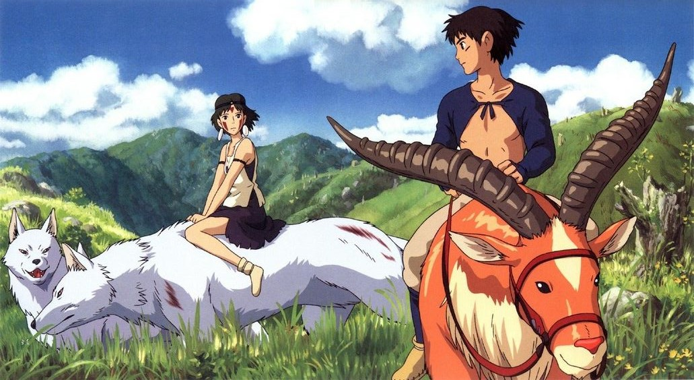
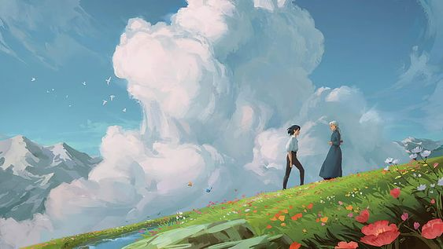

ANIME
アニメ

JUJUTSU KAISEN
呪術廻戦
"Jujutsu Kaisen" was animated by Studio MAPPA. The art captures dynamic action sequences with fluid movements and impactful attacks. This dynamic style enhances the intensity of battles, making them visually engaging and exciting. Characters in "Jujutsu Kaisen" are meticulously designed, each with unique appearances and distinct personalities. From the protagonists to the villains, the characters are visually striking and memorable, adding depth to the story. The manga and anime excel in portraying expressive facial expressions, effectively conveying emotions ranging from intense determination to comedic relief. This enhances the reader's or viewer's connection to the characters and their experiences.
LABEL
ラベル
STUDIO GHIBLI
スタジオジブリ
Studio Ghibli's films predominantly feature hand-drawn animation, giving them a timeless and organic quality. This dedication to traditional animation techniques emphasizes the craftsmanship and attention to detail in every frame, which is appreciated by audiences who admire the artistry of animation.
Studio Ghibli's art often showcases a profound appreciation for the beauty of nature. From lush forests to serene landscapes, the studio's films meticulously depict the natural world with intricate detail and vibrant colors. This emphasis on natural settings creates immersive and visually stunning environments that captivate audiences.
Characters in Studio Ghibli films are characterized by their expressive and emotive designs. Whether human or fantastical creatures, each character is crafted with distinct personalities and memorable appearances. Their expressive facial features and body language allow audiences to easily connect with and empathize with the characters' journeys.
Studio Ghibli's art often incorporates elements of fantasy and surrealism, creating enchanting and whimsical worlds. From magical creatures to fantastical landscapes, these elements add a sense of wonder and imagination to the studio's films, appealing to both children and adults alike.
SECTION
アニメ
poop poop poop poop poop poop poop poop poop poop poop poop poop poop poop poop poop poop poop poop poop poop poop poop poop poop poop poop poop poop poop poop poop poop poop poop poop poop poop poop poop